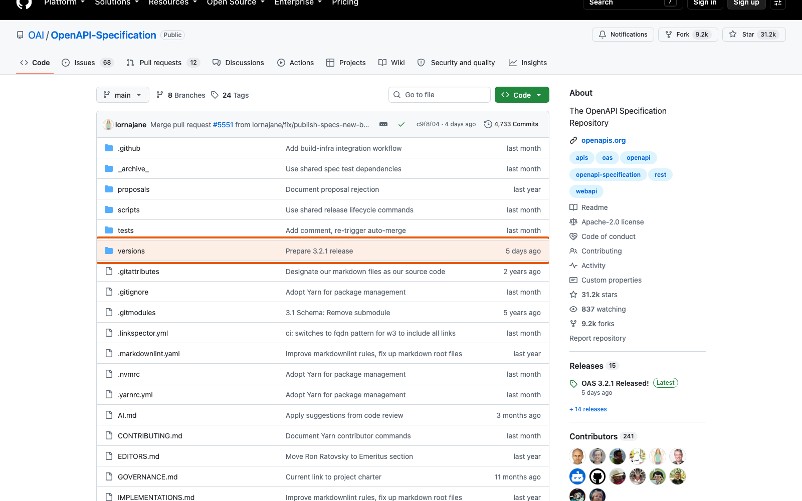
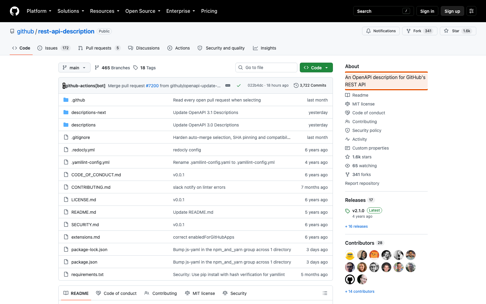
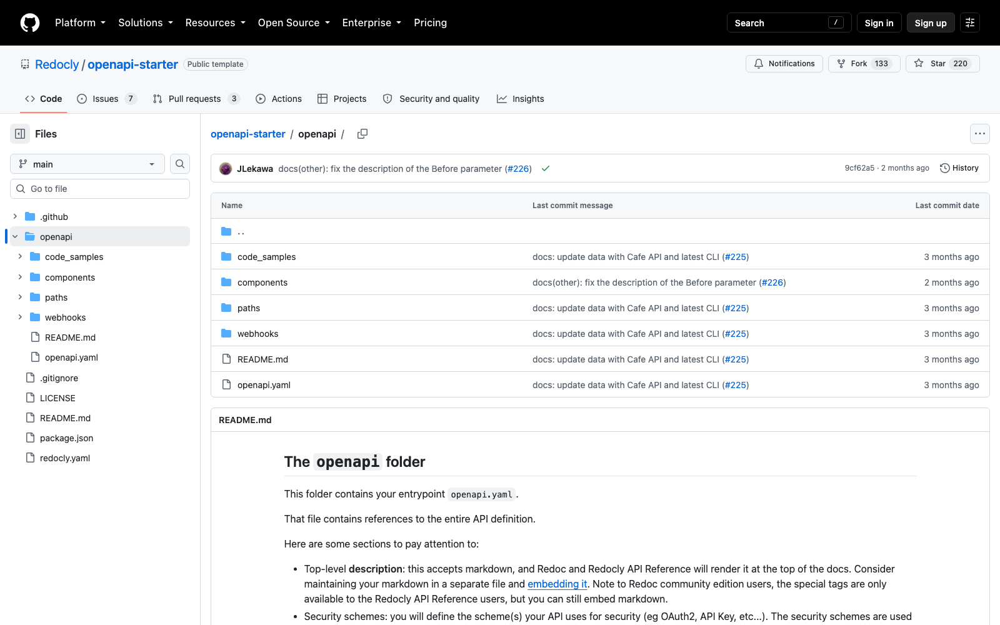
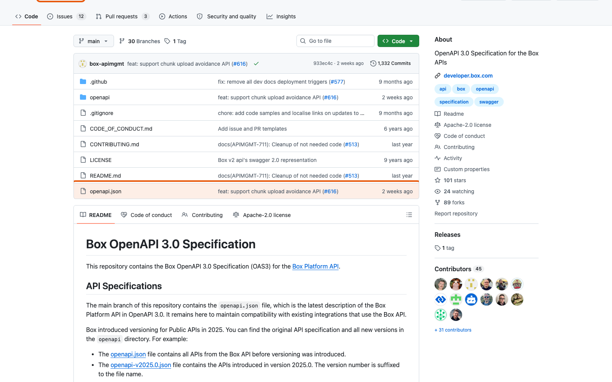

87 Как выглядит сам стандартРепозиторий OAI/OpenAPI-Specification — место, где развивается спецификация OpenAPI.
Что смотреть Что там README.mdчто такое спецификация и как в ней участвовать versions/опубликованные редакции: 3.0.x, 3.1.x, 3.2.x style-guide.mdправила оформления текста самой спецификации
Сам технический стандарт тоже развивается как versioned repository: с историей, pull requests и review.
github.com · OAI/OpenAPI-Specification СКРИНШОТ · 15.09.2026

Корень репозитория спецификации: папка versions, README.md и style-guide.md. Клик — увеличить.
88 Большая организация создаёт собственный API standardZalando опубликовала правила, по которым её команды проектируют REST API.
zalando/restful-api-guidelinesОсобенно полезные разделы в папке chapters:
design principles; HTTP requests; JSON; pagination; security; deprecation; compatibility. Zalando использует API First: спецификация создаётся до реализации и проходит review.
github.com · zalando/restful-api-guidelines СКРИНШОТ · 15.09.2026
Описание репозитория «A model set of guidelines for RESTful APIs and Events» и папка chapters. Клик — увеличить.
89 Ещё одна организация — другие правилаMicrosoft публикует общие правила и отдельные правила для двух своих платформ.
Что изучить Что там Guidelines.mdобщие правила Microsoft REST API azure/правила для сервисов Azure graph/правила для Microsoft Graph CONTRIBUTING.mdкак предлагать изменения
Полезно сравнить правила versioning Microsoft и Zalando.
Корпоративный стандарт не обязан быть одинаковым у всех компаний.
github.com · microsoft/api-guidelines СКРИНШОТ · 15.09.2026
Корень репозитория: Guidelines.md, папки azure и graph. Клик — увеличить.
90 Style Guide + автоматический rulesetВ репозитории adidas правило существует одновременно как текст и как автоматическая проверка.
Здесь особенно интересна связь Markdown guidelines и правил Spectral. В корне лежат:
Файл Что это ruleset.mdописание правил для людей .spectral.ymlконфигурация линтера репозитория adidas-spectral.yamlruleset, который подключают команды
Это практически прямой пример темы нашей дисциплины.
github.com · adidas/api-guidelines СКРИНШОТ · 15.09.2026
Файлы adidas-spectral.yaml и ruleset.md в корне репозитория. Клик — увеличить.
91 OpenAPI реального огромного APIGitHub публикует OpenAPI description своего REST API.
github/rest-api-descriptionВ репозитории лежит описание сотен операций GitHub REST API. README сообщает, что это описание используется во всём процессе разработки API: по нему проверяются запросы к GitHub API и работают контрактные тесты.
OpenAPI не ограничивается учебными проектами.
github.com · github/rest-api-description СКРИНШОТ · 15.09.2026

Описание репозитория: «An OpenAPI description for GitHub's REST API». Клик — увеличить.
92 Как организовать большой OpenAPI по файламRedocly/openapi-starter полезен не кодом приложения, а организацией API description.
openapi/
├── openapi.yaml точка входа
├── paths/ по файлу на адрес
├── components/ схемы, параметры
├── code_samples/
└── webhooks/Большой OpenAPI необязательно хранить одним огромным YAML. Его разбивают на файлы, а $ref собирает их в один документ.
github.com · Redocly/openapi-starter СКРИНШОТ · 15.09.2026

Папка openapi: openapi.yaml, paths, components, code_samples, webhooks. Клик — увеличить.
93 Правила можно сделать очень строгимиВ репозитории OpenAPI DigitalOcean есть собственный Spectral ruleset.
digitalocean/openapi → spectral/ruleset.ymlЧто проверяется Правило rate limit headers ratelimit-headersexamples properties-must-include-examplesoperationId naming operationid-must-follow-new-naming-conventionsschema naming schema-key-must-be-snake-casedsecurity declarations oas3-operation-security-defined
Хороший материал для самостоятельного анализа: откройте файл и найдите, какие проверки вынесены в папку functions.
github.com · digitalocean/openapi СКРИНШОТ · 15.09.2026
spectral/ruleset.yml: у правил ratelimit-headers и properties-must-include-examples стоит severity: error. Клик — увеличить.
94 OpenAPI можно использовать как публичный source of truthBox публикует OpenAPI specification своей платформы в открытом репозитории.
В корне лежит openapi.json — описание Box Platform API. В папке openapi хранятся отдельные файлы для версий, введённых в 2025 году: openapi-v2025.0.json, openapi-v2026.0.json.
По репозиторию видно, как versioned API descriptions развиваются вместе с API.
github.com · box/box-openapi СКРИНШОТ · 15.09.2026

Корень репозитория: файл openapi.json и папка openapi. Клик — увеличить.
← Часть 10. Стандарт и его проверка Часть 12. Репозиторий API на GitHub →